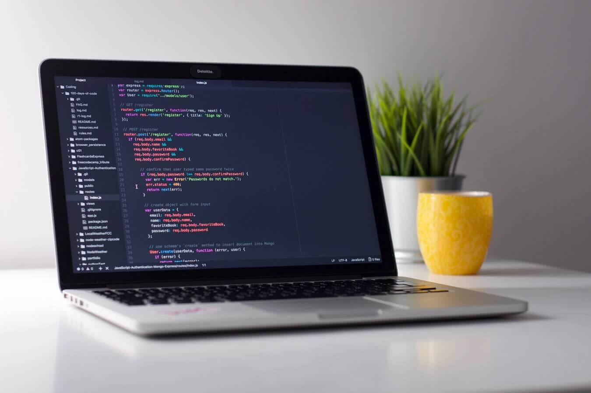

Witam na stronie, na której znajdziesz potrzebne informacje odnośnie egzaminu INF.03 w kwestii tworzenia aplikacji internetowych i obsługi bazy danych.
Koniec Technikum Informatycznego to czas podsumowań, przemyśleń, ale także czas ostatnich egzaminów w szkole. Pierwszym z nich jest właśnie ten egzamin.
Strona ta ma za zadanie skumulowanie potrzebnej bardziej bądź mniej wiedzy, która przyda się do zaliczenia pozytywnego egzaminów teoretycznych i praktycznych.
Poniżej warto zauważyć daty na rok szkolny 2023/2024, w sesji zimowej.
| Rodzaj | Data | Godzina |
|---|---|---|
| Egzamin Teoretyczny | 10.01.2024 | 8:00 |
| Egzamin Praktyczny | 16.01.2023 | 8:00 |
| Wyniki | 27.03.2024 | - |
Strona podzielona jest na 5 części:
- HTML - Gdzie omówione są podstawy dotyczące budowy strony w oparciu o ten język
- CSS - Gdzie omówione są podstawy dotyczące formatowania stylu strony w oparciu o ten język
- Java Script - Gdzie omówione są podstawy dotyczące skryptów po stronie przeglądarki w oparciu o ten język
- PHP - Gdzie omówione są podstawy dotyczące skryptów po stronie serwera w oparciu o ten język
- SQL - Gdzie omówione są podstawy dotyczące działania baz danych i pracy z nimi w oparciu o ten język
Po więcej informacji specyficznych dla danego języka, zachęcam do zwiedzenia interesujących cię podstron.